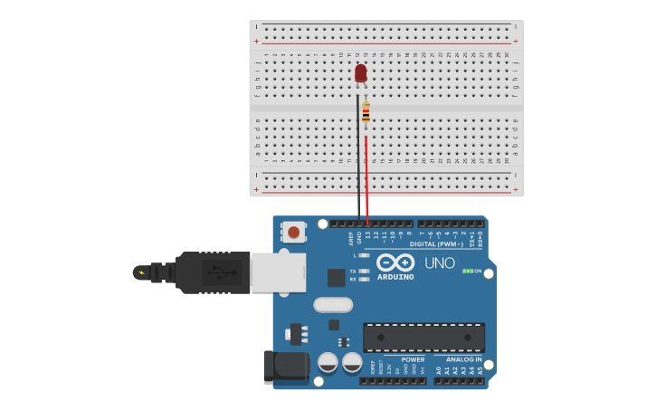

PROJECT 01: BLINKING LED
Arduino Uno R3 project
Project Summary
This project demonstrates Digital output and basic programming. You will build a simple circuit to control an LED on Pin 13, learning the basics of wiring and loop timing.
Key Components
- Arduino Uno R3
- Red LED
- 220Ω Resistor (Red-Red-Brown)
- Red & Black Jumper Wires
- Breadboard
Circuit Diagram

Pin Connections
| Arduino Pin | Component Connection |
|---|---|
| Pin 13 | Red Wire → Resistor → LED Anode (+) |
| GND | Black Wire → LED Cathode (-) |
Step-by-Step Instructions
- Insert the LED into the breadboard. Identify the Anode (Long Leg) and Cathode (Short Leg).
- Connect the 220Ω Resistor to the same row as the LED Anode (Long Leg).
- Connect the Red Jumper Wire from Pin 13 to the free end of the Resistor.
- Connect the Black Jumper Wire from the LED Cathode (Short Leg) to GND.
- Connect the Arduino via USB, paste the code below, and upload.
Arduino Code
/* Project 1 - Blinking LED
* Hardware: LED with 220Ω resistor connected from pin 13 to GND.
*/
int ledPin = 13; // use on-board LED on many Arduino boards
void setup() {
pinMode(ledPin, OUTPUT); // configure pin as output to drive the LED
}
void loop() {
digitalWrite(ledPin, HIGH); // set pin HIGH -> LED ON
delay(500); // wait 500 ms
digitalWrite(ledPin, LOW); // set pin LOW -> LED OFF
delay(500); // wait 500 ms
}
How It Works
- Line-by-line justification:
-
1)
int ledPin = 13;— stores the pin number so it's easy to change. -
2)
pinMode(ledPin, OUTPUT);— sets the pin as an output so digitalWrite can drive it. -
3)
digitalWrite(ledPin, HIGH);— applies voltage (5V) to the pin to turn LED on. -
4)
delay(500);— a blocking wait; simple but stops microcontroller from doing other tasks. - Digital / Analog I/O Notes:
- Digital pins set with pinMode() drive outputs (HIGH/LOW). AnalogRead reads sensors (0-1023). PWM via analogWrite uses timers to simulate analog voltages.
Expected Output
The Red LED will blink on for 0.5 seconds and off for 0.5 seconds repeatedly. If it doesn't work, check that the LED legs aren't swapped (Long leg must connect to the Resistor side).
What You Learned
- How to wire a basic circuit with a Current Limiting Resistor.
- How to program Arduino digital pins (HIGH vs LOW).
- The concept of Anode (+) and Cathode (-).
Next Steps / Extension Ideas
Try changing the `delay(500)` to `delay(100)` to make it blink faster, or try creating a heartbeat pattern (High, Low, High, Low-Low).